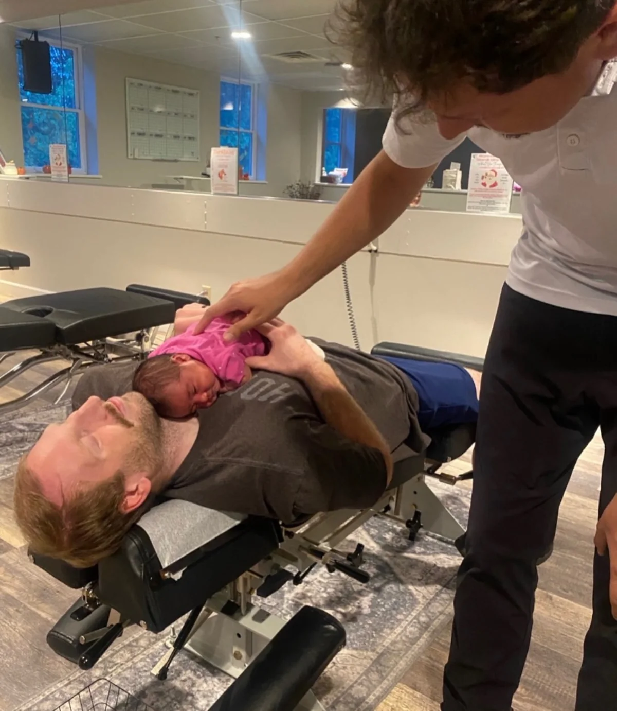
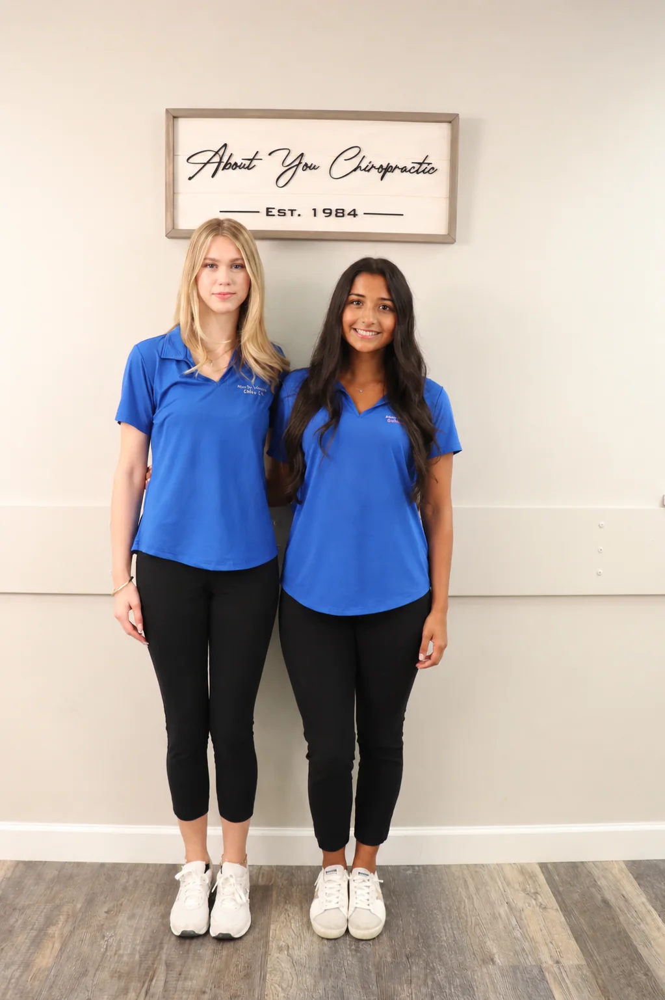

Gentle by design
Technique and positioning are adapted for smaller, growing bodies.
Every visit is adapted to your child’s age, development, and comfort.

Technique and positioning are adapted for smaller, growing bodies.
Parents stay involved, questions are welcome, and we follow your child’s cues.
Findings and recommendations are explained clearly and personalized to your child.
We begin with your child’s history, development, activities, and your questions.
The examination changes with age. Dr. Peter explains each step and keeps the experience comfortable.
Dr. Peter reviews the findings and explains any recommendations.

No. Techniques and the amount of force used are adapted to the child’s size, age, development, and comfort.
Absolutely. Parents stay involved and every step is explained.
The first visit focuses on consultation and examination. We proceed only when appropriate and comfortable.
Yes. The new-patient offer covers the entire immediate family for $30 when everyone attends the first visit together.
The entire family’s first-visit consultation and examination is $30 when you come together.